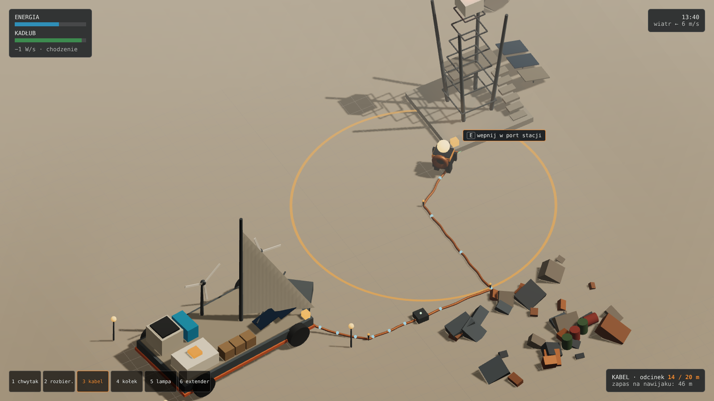
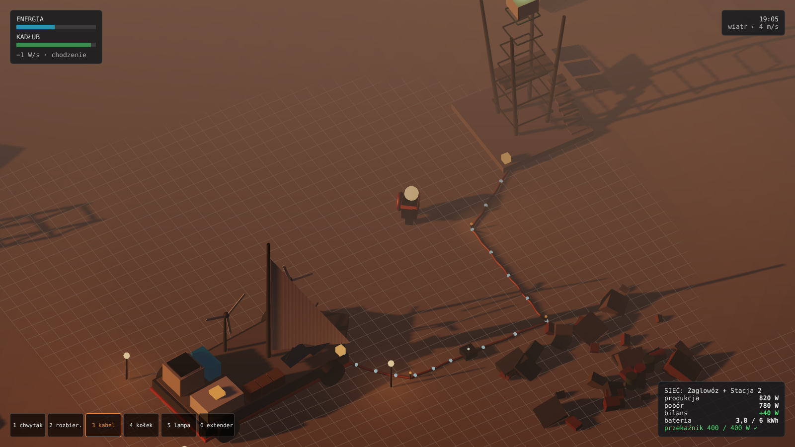
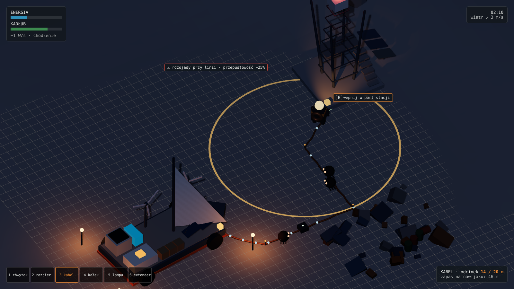
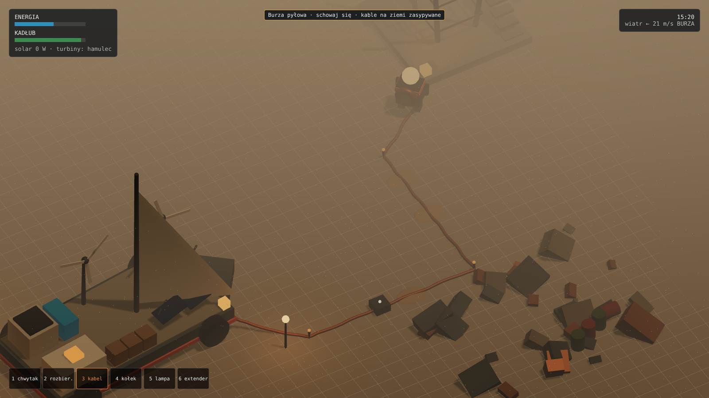
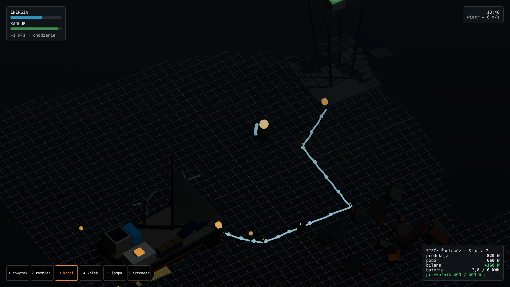

<title>Popiół i Prąd</title>
<meta name="claude:viewport-fit-sides" content="cover">
<link rel="preconnect" href="https://fonts.googleapis.com">
<link rel="stylesheet" href="https://fonts.googleapis.com/css2?family=Chakra+Petch:wght@500;700&family=IBM+Plex+Sans:wght@400;600&family=IBM+Plex+Mono:wght@400;600&display=swap">
<style>
/* Layout: jedna kolumna dokumentu (~72ch) z szerokimi planszami SVG wychodzącymi na pełną szerokość treści */
:root{
  --bg:#eef0ee; --panel:#e2e6e3; --fg:#1f2724; --muted:#5b6762; --line:#c3cbc6;
  --accent:#d9731a;   /* lampa sodowa */
  --copper:#b5652e;   /* kabel */
  --volt:#2f8fb8;     /* przepływ energii */
  --good:#3d8b4f; --bad:#b8402f;
  --sky:#d7dcd8; --ash:#a8aea9; --ash2:#8d948f; --metal:#6c7671;
  --f-display:"Chakra Petch", "Arial Narrow", sans-serif;
  --f-body:"IBM Plex Sans", system-ui, sans-serif;
  --f-mono:"IBM Plex Mono", ui-monospace, monospace;
}
@media (prefers-color-scheme: dark){:root:not([data-theme="light"]){
  --bg:#161b19; --panel:#1f2623; --fg:#e3e8e5; --muted:#97a39d; --line:#34403b;
  --accent:#f08c35; --copper:#d0804a; --volt:#55b4dc; --good:#5fb070; --bad:#de6a57;
  --sky:#222a27; --ash:#3a4440; --ash2:#4a5550; --metal:#7f8a85; color-scheme:dark}}
:root[data-theme="dark"]{
  --bg:#161b19; --panel:#1f2623; --fg:#e3e8e5; --muted:#97a39d; --line:#34403b;
  --accent:#f08c35; --copper:#d0804a; --volt:#55b4dc; --good:#5fb070; --bad:#de6a57;
  --sky:#222a27; --ash:#3a4440; --ash2:#4a5550; --metal:#7f8a85; color-scheme:dark}
*{box-sizing:border-box}
body{background:var(--bg);color:var(--fg);font:16px/1.6 var(--f-body);
  padding-left:max(16px,env(safe-area-inset-left,0px));padding-right:max(16px,env(safe-area-inset-right,0px));padding-block:40px 80px}
main{max-width:980px;margin:0 auto;display:flex;flex-direction:column;gap:56px}
.prose{max-width:72ch}
h1,h2,h3{font-family:var(--f-display);text-wrap:balance;line-height:1.15;margin:0}
h1{font-size:clamp(2.4rem,6vw,3.8rem);letter-spacing:.01em}
h2{font-size:1.75rem;margin-bottom:14px}
h3{font-size:1.15rem;margin:22px 0 8px}
p{margin:0 0 12px}
a{color:var(--volt)}
.eyebrow{font:600 .75rem/1 var(--f-mono);letter-spacing:.14em;text-transform:uppercase;color:var(--accent);margin-bottom:12px}
.lead{font-size:1.15rem;color:var(--muted);max-width:62ch}
.note{border-left:3px solid var(--accent);padding:10px 16px;background:var(--panel);max-width:72ch}
code,kbd,.mono{font-family:var(--f-mono);font-size:.9em}
kbd{display:inline-block;min-width:1.9em;text-align:center;padding:1px 6px;border:1px solid var(--line);border-bottom-width:2px;border-radius:4px;background:var(--panel)}
.tablewrap{overflow-x:auto}
table{border-collapse:collapse;width:100%;font-size:.93rem}
th,td{text-align:left;padding:8px 10px;border-bottom:1px solid var(--line);vertical-align:top}
th{font:600 .72rem/1.2 var(--f-mono);letter-spacing:.1em;text-transform:uppercase;color:var(--muted)}
td.num{font-variant-numeric:tabular-nums;font-family:var(--f-mono)}
.src{font:400 .78rem var(--f-mono);color:var(--muted)}
.grid2{display:grid;grid-template-columns:repeat(auto-fit,minmax(280px,1fr));gap:20px 32px}
.grid2>*{min-width:0}
ul{margin:0 0 12px;padding-left:20px}
li{margin-bottom:4px}
figure{margin:0}
figcaption{font:400 .82rem/1.4 var(--f-mono);color:var(--muted);padding:10px 12px}
.plate{overflow-x:auto;border:1px solid var(--line);background:var(--panel)}
.plate svg{display:block;min-width:760px;width:100%;height:auto}
.plate.small svg{min-width:560px}
/* SVG tokens */
.s-sky{fill:var(--sky)} .s-ash{fill:var(--ash)} .s-ash2{fill:var(--ash2)} .s-metal{fill:var(--metal)}
.s-panel{fill:var(--panel)} .s-bg{fill:var(--bg)} .s-fg{fill:var(--fg)} .s-muted{fill:var(--muted)}
.s-acc{fill:var(--accent)} .s-volt{fill:var(--volt)} .s-good{fill:var(--good)} .s-bad{fill:var(--bad)} .s-cu{fill:var(--copper)}
.k-cu{stroke:var(--copper);fill:none;stroke-width:3;stroke-linecap:round}
.k-volt{stroke:var(--volt);fill:none;stroke-width:2.2;stroke-dasharray:6 6}
.k-line{stroke:var(--line);fill:none}
.k-fg{stroke:var(--fg);fill:none;stroke-width:1.5}
.k-muted{stroke:var(--muted);fill:none;stroke-width:1.2}
.k-acc{stroke:var(--accent);fill:none;stroke-width:2}
.t{font-family:var(--f-mono);font-size:12px;fill:var(--fg)}
.tm{font-family:var(--f-mono);font-size:11px;fill:var(--muted)}
.td{font-family:var(--f-display);font-size:15px;font-weight:700;fill:var(--fg)}
@media (prefers-reduced-motion:no-preference){.flow{animation:flow 1.2s linear infinite}}
@keyframes flow{to{stroke-dashoffset:-24}}
.pill{display:inline-block;font:600 .7rem/1 var(--f-mono);letter-spacing:.06em;padding:4px 8px;border-radius:99px;border:1px solid currentColor}
.pill.ok{color:var(--good)} .pill.guess{color:var(--accent)}
</style>

<main>

<header class="prose">
  <div class="eyebrow">Research + koncepcja gry 2D · 6 XI 2026</div>
  <h1>Popiół i Prąd</h1>
  <p class="lead">Najpierw rozbiór <em>The Last Caretaker</em> (Channel 37): o co chodzi, jak działa pętla, sterowanie, surowce i kable. Potem własna gra 2D z tego samego gatunku, z podobnymi mechanikami, ale z własnym światem, bohaterem i celem.</p>
  <p class="note"><strong>Podejście:</strong> nie kopiujemy nazwy, postaci, fabuły, grafik ani lokacji oryginału. Bierzemy gatunek (survival-crafting „robot-opiekun w zrujnowanym świecie”) i ogólne mechaniki (bateria jako stamina, odzysk złomu, sieć energetyczna na kablach, mobilna baza). Reszta jest nasza.</p>
</header>

<!-- ================= CZĘŚĆ 1 ================= -->
<section>
  <div class="eyebrow">Część 1 · Research</div>
  <h2>Czym jest The Last Caretaker</h2>
  <div class="prose">
    <p>Pierwszoosobowy survival-crafting dla jednego gracza od studia Channel 37. Early Access na Steam i Epic od 6 listopada 2025. Ziemia jest zalana, z oceanu wystają skalne iglice, rdzewiejące wieże i pływające doki. Gracz to przebudzony robot, ostatni działający „Caretaker”, który ma odzyskać ludzkie zarodki/nasiona, odbudować kompleks badawczy, wychować nowe pokolenie i wysłać je na orbitę. Fabułę opowiadają miejsca, logi i towarzysz w radiu. <span class="src">[A][C]</span></p>
    <p>W grze nie ma jedzenia, picia ani snu. Rolę głodu i staminy pełni wewnętrzna bateria robota. <span class="src">[C]</span></p>
  </div>

  <h3>Pętla rozgrywki</h3>
  <figure class="plate small">
    <svg viewBox="0 0 760 230" role="img" aria-label="Pętla rozgrywki: płyń, rozbieraj, recykluj, wytwarzaj, zasilaj, odblokuj">
      <rect class="s-panel" width="760" height="230"/>
      <defs><marker id="ar" viewBox="0 0 10 10" refX="9" refY="5" markerWidth="7" markerHeight="7" orient="auto"><path d="M0,0 L10,5 L0,10z" class="s-muted"/></marker></defs>
      <g class="t">
        <rect x="20" y="40" width="120" height="54" rx="4" class="s-bg"/><text x="80" y="64" text-anchor="middle" class="td">Płyń łodzią</text><text x="80" y="82" text-anchor="middle" class="tm">diesel / prąd</text>
        <rect x="170" y="40" width="120" height="54" rx="4" class="s-bg"/><text x="230" y="64" text-anchor="middle" class="td">Rozbieraj</text><text x="230" y="82" text-anchor="middle" class="tm">Dismantle Tool</text>
        <rect x="320" y="40" width="120" height="54" rx="4" class="s-bg"/><text x="380" y="64" text-anchor="middle" class="td">Recykluj</text><text x="380" y="82" text-anchor="middle" class="tm">złom → surowiec</text>
        <rect x="470" y="40" width="120" height="54" rx="4" class="s-bg"/><text x="530" y="64" text-anchor="middle" class="td">Wytwarzaj</text><text x="530" y="82" text-anchor="middle" class="tm">Fabricator</text>
        <rect x="620" y="40" width="120" height="54" rx="4" class="s-bg"/><text x="680" y="64" text-anchor="middle" class="td">Zasilaj</text><text x="680" y="82" text-anchor="middle" class="tm">kable, generatory</text>
        <rect x="320" y="150" width="120" height="54" rx="4" class="s-bg"/><text x="380" y="174" text-anchor="middle" class="td">Odblokuj</text><text x="380" y="192" text-anchor="middle" class="tm">skill pointy, tiery</text>
      </g>
      <g class="k-muted" marker-end="url(#ar)">
        <path d="M140 67 H168"/><path d="M290 67 H318"/><path d="M440 67 H468"/><path d="M590 67 H618"/>
        <path d="M680 94 V177 H442"/><path d="M318 177 H80 V96"/>
      </g>
      <text x="380" y="22" text-anchor="middle" class="tm">czynności dają XP → poziomy odblokowują blueprinty → dalsze, trudniejsze lokacje</text>
    </svg>
  </figure>
  <div class="grid2" style="margin-top:20px">
    <div>
      <h3>Energia robota i śmierć</h3>
      <ul>
        <li>Niebieski pasek baterii stale powoli spada, nawet gdy stoisz. Skoki, wytwarzanie, rozbieranie i walka drenują go szybciej. <span class="src">[C][E]</span></li>
        <li>Pusta bateria → spada zielony pasek Vitality. Vitality = 0 → „terminacja” i wczytanie ostatniego zapisu ze stacji Backup. <span class="src">[A][C][E]</span></li>
        <li>Ładowanie: kabel od źródła do siebie (opcja „Connect (Self)”) albo baterie jednorazowe. Leczenie: białe stacje Vitality obok stacji zapisu, działają bez prądu. <span class="src">[C][E]</span></li>
        <li>Upadek z wysokich pomostów zabija. <span class="src">[A]</span></li>
      </ul>
    </div>
    <div>
      <h3>Łódź jako baza</h3>
      <ul>
        <li>Łódź to mobilna baza: mapa nawigacyjna, ster, wskaźniki paliwa, przepustnica. Ocean ma fizykę, przy fali łódź rzuca. <span class="src">[A]</span></li>
        <li>Wbudowany zbiornik diesla 2000 l. Na łodzi stoi Recycler, a z tyłu sieć zbierająca złom w trakcie płynięcia. <span class="src">[A][B]</span></li>
        <li>Wszystkie porty elektryczne łodzi są połączone we wspólną szynę, więc generatory można stawiać gdziekolwiek. <span class="src">[E]</span></li>
        <li>Wyprawa: radio podaje koordynaty, zaznaczasz na mapie, płyniesz, kotwiczysz przy iglicy, wspinasz się. <span class="src">[A]</span></li>
      </ul>
    </div>
  </div>
</section>

<section>
  <h2>Surowce: wszystko z recyklingu</h2>
  <div class="prose">
    <p>Nie ma drzew do ścinania ani rud do kopania w klasycznym sensie. Surowce bazowe nie leżą luzem: znajdujesz śmieci, drobne wrzucasz do ekwipunku, duże rozbierasz narzędziem albo wnosisz w całości do Recyclera. W Recyclerze <kbd>F</kbd> wrzuca cały złom naraz. Każda lokacja ma skończoną pulę łatwego złomu. Ekwipunek ma limit wagi (przeciążenie pokazuje ikona). Ciała stałe trzymasz w skrzyniach, a ciecze i gazy wymagają specjalnych zbiorników. <span class="src">[A][B][C]</span></p>
  </div>
  <div class="tablewrap">
  <table>
    <thead><tr><th>Złom</th><th>Daje</th></tr></thead>
    <tbody>
      <tr><td>Belki, rury</td><td>żelazo</td></tr>
      <tr><td>Metalowy złom, kanistry, skrzynie</td><td>miedź, aluminium</td></tr>
      <tr><td>Palety, skrzynie, plastik</td><td>plastik</td></tr>
      <tr><td>Monitory, potłuczone szkło</td><td>szkło</td></tr>
      <tr><td>Torby, tkaniny, krzesła</td><td>tkanina</td></tr>
      <tr><td>Opony, guma</td><td>guma</td></tr>
      <tr><td>Kable, tech-złom, zaawansowane komponenty</td><td>poliuretan, złoto, krzem</td></tr>
      <tr><td>High-tech złom, LCD, zepsute roboty</td><td>tytan, włókno węglowe</td></tr>
      <tr><td>Ultra-tech złom</td><td>neutronium, żel plazmowy</td></tr>
      <tr><td>Materia bio (z wrogów, wodorosty)</td><td>wapń, wit. D, omega-3, białko i węglowodany; też paliwo</td></tr>
    </tbody>
  </table>
  </div>
  <p class="src">Źródło tabeli: [B]. Recycler nie przetwarza materii bio [F]. Na iglicach są też samorodki miedzi, żelaza, złota i tytanu [A].</p>
</section>

<section>
  <h2>Prąd i kable: dokładne zasady</h2>
  <div class="grid2">
    <div>
      <h3>Źródła</h3>
      <ul>
        <li><strong>Baterie</strong>: małe jednorazowe; większe ładowalne; największe stacjonarne. <span class="src">[E]</span></li>
        <li><strong>Solar</strong> (Lumilite → Lumimid → Lumimax): tylko w dzień, pełna moc przy czystym niebie, zero w nocy i w burzy, mały bufor na noc. <span class="src">[E]</span></li>
        <li><strong>Wiatr</strong> (Whisper → Cyclone → Typhoon): działa zawsze, moc rośnie z wiatrem, niewykorzystana energia przepada. <span class="src">[E]</span></li>
        <li><strong>Generator benzynowy</strong>: paliwo robi się z odrobiny prądu i materii organicznej. Wydziela CO₂, więc w pomieszczeniu trzeba to ogarnąć. Diesel do łodzi robi się z materii bio. <span class="src">[A][E]</span></li>
      </ul>
    </div>
    <div>
      <h3>Kable i złączki</h3>
      <ul>
        <li><strong>Kabel</strong>: 1 miedź + 1 plastik, 0,1 kg, tier 2. Jeden odcinek ma maks. <strong>20 m</strong>, potem trzeba go wpiąć. <span class="src">[F]</span></li>
        <li><strong>Extender</strong>: 1 żelazo + 1 plastik, <strong>4 porty</strong>, wyłącznik na górze, montaż na ścianie lub podłodze. Łączy kilka źródeł w jedną linię albo rozdziela jedno źródło na kilka odbiorników. <span class="src">[F]</span></li>
        <li><strong>Tryby portu</strong>: <em>output</em> (domyślny), <em>input</em> (ciągnie z drugiego końca), <em>equalize</em> (wyrównuje). Przełączasz <kbd>F</kbd> nad portem lub kablem. <span class="src">[E][F]</span></li>
        <li><kbd>Q</kbd> trzymając koniec kabla zwija go do ekwipunku. <span class="src">[F]</span></li>
      </ul>
    </div>
  </div>
  <div class="tablewrap" style="margin-top:16px">
  <table>
    <thead><tr><th>Element</th><th>Liczba z wiki</th></tr></thead>
    <tbody>
      <tr><td>Mała bateria (tier 3, tylko oddaje)</td><td class="num">500 Wh</td></tr>
      <tr><td>Średnia bateria (tier 8)</td><td class="num">6 kWh</td></tr>
      <tr><td>Bulk Battery (tier 24)</td><td class="num">20 kWh</td></tr>
      <tr><td>Fabricator, pobór w spoczynku</td><td class="num">100 W</td></tr>
      <tr><td>Recycler, pobór w spoczynku</td><td class="num">100 W</td></tr>
    </tbody>
  </table>
  </div>
  <p class="src">Źródło: [F]. Nie znalazłem liczb mocy generatorów, poboru w pracy ani tego, co się dzieje przy przeciążeniu. To projektujemy sami.</p>
</section>

<section>
  <h2>Kabel w rękach robota: jak to działa w oryginale</h2>
  <div class="prose">
    <p>Tego nie ma na wiki, więc zebrałem to z wątków graczy na Steamie. Opisy są spójne, ale to relacje graczy, a nie dokumentacja twórców.</p>
  </div>
  <div class="grid2">
    <div>
      <h3>Interakcja</h3>
      <ul>
        <li><kbd>E</kbd> na leżącym kablu: bierzesz jeden koniec do ręki. <span class="src">[G5]</span></li>
        <li><kbd>E</kbd> patrząc na gniazdo: jeden koniec wchodzi do gniazda, drugi zostaje w ręce. Idziesz i kabel się rozwija. <kbd>E</kbd> na drugim gnieździe wpina go. <span class="src">[G5]</span></li>
        <li>Patrzysz w dół i <kbd>E</kbd>: jeden koniec podpina się do ciebie (ładowanie), drugi trzymasz. Robot ma kilka gniazd: ciało, plecak, broń. <span class="src">[G5]</span></li>
        <li>Przytrzymanie <kbd>Q</kbd> zwija kabel do ekwipunku albo anuluje podpięcie. <span class="src">[G5][F]</span></li>
        <li>Na dole ekranu licznik pokazuje, ile metrów zostało do 20. <span class="src">[G2]</span></li>
      </ul>
    </div>
    <div>
      <h3>Długość i fizyka</h3>
      <ul>
        <li>Kabel w ekwipunku to metry: 1 sztuka = 1 m, jeden craft daje 5 m. Rozwijając, zużywasz sztuki z ekwipunku. Gdy podchodzisz bliżej, sztuki wracają. <span class="src">[G1]</span></li>
        <li>Odcinek ma maks. 20 m, ale żeby go tyle rozwinąć, musisz mieć 20 sztuk przy sobie. <span class="src">[G1][G3]</span></li>
        <li>Po 20 m robot zostaje zatrzymany. Kabel jest lekko rozciągliwy: biegiem albo skradając się zyskasz ok. 0,5–5 m, ale to niestabilne. Z mniej niż 20 m w ekwipunku nie ma rozciągania, zatrzymuje od razu. <span class="src">[G2]</span></li>
        <li>Dalej tylko przez extender: wpinasz kabel w jeden port i zaczynasz nowy z drugiego. <span class="src">[G1]</span></li>
        <li>Luźne kable dyndają fizycznie, a po chwili gra zamienia je w obiekt statyczny dla wydajności. <span class="src">[G5]</span></li>
        <li>Typy kabli i gniazd są osobne: prąd, paliwo, woda (słodka/słona), gazy. Nie da się mieszać. <span class="src">[G5][F]</span></li>
        <li>Znane błędy: kable postawione przez twórców nie mają limitu długości, a po zwinięciu dają tylko 1 m. <span class="src">[G4]</span></li>
      </ul>
    </div>
  </div>
  <p class="src">Żadne źródło nie opisuje zaczepiania o przeszkody ani plątania się kabli. To zostawiamy naszemu projektowi.</p>
</section>

<section>
  <h2>Sterowanie</h2>
  <div class="prose">
    <p>Pełnej listy klawiszy nie ma w żadnym dostępnym źródle (strona Controls na wiki nie istnieje). Potwierdzone są tylko:</p>
  </div>
  <div class="tablewrap">
  <table>
    <thead><tr><th>Klawisz</th><th>Akcja</th><th>Pewność</th></tr></thead>
    <tbody>
      <tr><td><kbd>E</kbd></td><td>interakcja: Fabricator, „Connect (Self)” przy kablu</td><td><span class="pill ok">źródło [E]</span></td></tr>
      <tr><td><kbd>F</kbd></td><td>tryb portu/kabla (output / input / equalize); w Recyclerze „wrzuć cały złom”</td><td><span class="pill ok">źródło [B][E][F]</span></td></tr>
      <tr><td><kbd>Q</kbd></td><td>zwiń trzymany kabel</td><td><span class="pill ok">źródło [F]</span></td></tr>
      <tr><td><kbd>B</kbd></td><td>postaw blueprint do zbudowania później</td><td><span class="pill ok">źródło [E]</span></td></tr>
      <tr><td>PPM w Fabricatorze</td><td>„Add missing parts to queue”</td><td><span class="pill ok">źródło [E]</span></td></tr>
      <tr><td><kbd>5</kbd></td><td>domyślny slot narzędzia naprawczego</td><td><span class="pill ok">źródło [C]</span></td></tr>
      <tr><td>WASD, mysz, chwytanie</td><td>ruch FPP, „chwyć i trzymaj” przedmioty, ciągnij dźwignie i drzwi</td><td><span class="pill guess">standard FPP, [C] opisowo</span></td></tr>
    </tbody>
  </table>
  </div>
</section>

<!-- ================= CZĘŚĆ 2 ================= -->
<section>
  <div class="eyebrow">Część 2 · Nasza gra</div>
  <h2>Popiół i Prąd: koncepcja 2D</h2>
  <div class="prose">
    <p><strong>Świat.</strong> Po wulkanicznej zimie kontynent przykrył popiół. Nie ma oceanu, jest morze wydm i ściany starych sieci przesyłowych wystające z pyłu. Wiatr wieje cały czas, a słońce przebija się tylko między burzami pyłowymi.</p>
    <p><strong>Bohater.</strong> <em>Wolt</em>, mały automat serwisowy linii wysokiego napięcia. Ma chwytak, nawijak kabla na plecach i lampę sodową zamiast głowy.</p>
    <p><strong>Baza.</strong> <em>Żaglowóz</em>, lądowy jacht na kołach z żaglem i silnikiem elektrycznym. Pływa po wydmach z wiatrem albo pod prąd na baterii.</p>
    <p><strong>Cel.</strong> Ponownie spiąć <em>Sieć Siedmiu Stacji</em>, żeby zasilić uśpioną <em>Szklarnię Pod Kopułą</em> i wypuścić z niej las, który zatrzyma popiół. Postęp to fizycznie podłączone stacje na mapie, a nie fabuła o ratowaniu ludzi.</p>
  </div>

  <h3>Widok: z góry, na siatce</h3>
  <div class="prose"><p>Kamera z góry jak w grach fabrycznych, kafel 1 m = 32 px, wszystko stawiasz na siatce. Taki widok najlepiej pokazuje to, co w tym gatunku jest najciekawsze: układ sieci, przebieg kabli, rozstawienie maszyn na pokładzie i wokół stacji. Nie ma wspinania ani upadków. Wysokość zastępują dwie rzeczy: <em>słupy</em>, które podnoszą kabel nad ziemię, i <em>pomosty</em> stacji, czyli osobna warstwa widoczna po wejściu po schodach.</p></div>
  <figure class="plate">
    <svg viewBox="0 0 960 460" role="img" aria-label="Makieta top-down: żaglowóz, kabel na ziemi przez extender do stacji, okrąg zasięgu kabla, HUD">
      <defs>
        <pattern id="grid" width="32" height="32" patternUnits="userSpaceOnUse"><path d="M32 0 H0 V32" class="k-line" stroke-width=".6"/></pattern>
      </defs>
      <rect class="s-ash" width="960" height="460" opacity=".55"/>
      <rect width="960" height="460" fill="url(#grid)"/>
      <!-- wydmy (cienie) -->
      <ellipse cx="420" cy="90" rx="150" ry="46" class="s-ash2" opacity=".55"/>
      <ellipse cx="820" cy="400" rx="170" ry="50" class="s-ash2" opacity=".55"/>
      <ellipse cx="120" cy="420" rx="120" ry="30" class="s-ash2" opacity=".4"/>
      <!-- ŻAGLOWÓZ z góry -->
      <g>
        <path d="M64 176 H288 Q330 240 288 304 H64 Q40 240 64 176z" class="s-metal"/>
        <rect x="80" y="192" width="192" height="96" fill="url(#grid)" class="s-panel" opacity=".9"/>
        <rect x="80" y="192" width="192" height="96" fill="url(#grid)"/>
        <!-- moduły na kaflach 32px -->
        <rect x="80" y="192" width="64" height="64" class="s-bg" stroke="var(--fg)"/><text x="86" y="228" class="tm">recykl.</text>
        <rect x="144" y="192" width="32" height="64" class="s-volt" opacity=".55"/>
        <circle cx="208" cy="224" r="14" class="s-bg" stroke="var(--fg)"/>
        <path d="M208 224 l0 -26 M208 224 l23 13 M208 224 l-23 13" class="k-fg" stroke-width="3"/>
        <rect x="240" y="256" width="32" height="32" class="s-panel" stroke="var(--fg)"/><text x="236" y="250" class="tm">port</text>
        <circle cx="256" cy="272" r="5" class="s-acc"/>
        <!-- maszt i żagiel (z góry: belka) -->
        <circle cx="176" cy="272" r="5" class="s-fg"/>
        <path d="M176 272 L120 300" class="k-fg" stroke-width="4"/>
        <!-- koła -->
        <rect x="70" y="168" width="34" height="10" class="s-fg"/><rect x="250" y="168" width="34" height="10" class="s-fg"/>
        <rect x="70" y="302" width="34" height="10" class="s-fg"/><rect x="250" y="302" width="34" height="10" class="s-fg"/>
        <text x="90" y="160" class="td">Żaglowóz</text>
      </g>
      <!-- STACJA z góry -->
      <g>
        <rect x="672" y="128" width="160" height="160" class="s-bg" opacity=".7" stroke="var(--fg)"/>
        <path d="M672 128 L832 288 M832 128 L672 288" class="k-muted"/>
        <rect x="720" y="176" width="64" height="64" class="s-panel" stroke="var(--fg)" stroke-width="1.5"/>
        <circle cx="752" cy="208" r="9" class="s-bad"/>
        <text x="680" y="120" class="td">Stacja 2</text>
        <text x="692" y="306" class="tm">przekaźnik 0 / 400 W</text>
        <rect x="672" y="256" width="32" height="32" class="s-panel" stroke="var(--fg)"/><circle cx="688" cy="272" r="5" class="s-acc"/>
        <!-- schody na pomost -->
        <path d="M800 256 h32 M800 264 h32 M800 272 h32 M800 280 h32" class="k-muted"/>
        <text x="840" y="276" class="tm">schody → pomost</text>
        <!-- panele solarne -->
        <rect x="864" y="128" width="64" height="32" class="s-volt" opacity=".6"/><rect x="864" y="168" width="64" height="32" class="s-volt" opacity=".25"/>
        <text x="864" y="216" class="tm">panel zapylony</text>
      </g>
      <!-- złom -->
      <rect x="452" y="330" width="26" height="18" class="s-metal" transform="rotate(14 465 339)"/>
      <rect x="488" y="342" width="16" height="12" class="s-cu" opacity=".8"/>
      <rect x="436" y="360" width="20" height="14" class="s-metal"/>
      <text x="440" y="392" class="tm">złom</text>
      <!-- kabel: port łodzi → kołek → extender → kołek → Wolt -->
      <path d="M256 272 L352 272 L352 368 L416 368" class="k-cu"/>
      <path d="M256 272 L352 272 L352 368 L416 368" class="k-volt flow"/>
      <circle cx="352" cy="272" r="4" class="s-fg"/><circle cx="352" cy="368" r="4" class="s-fg"/>
      <rect x="416" y="356" width="24" height="24" rx="3" class="s-bg" stroke="var(--fg)"/>
      <text x="384" y="410" class="tm">extender 4×</text>
      <path d="M440 368 L544 368 L544 272 L572 272" class="k-cu"/>
      <circle cx="544" cy="368" r="4" class="s-fg"/>
      <!-- okrąg zasięgu 20 m od ostatniego kołka (20 kafli * 32 = 640 za duże; skala makiety: 20 m = 110 px) -->
      <circle cx="544" cy="368" r="110" class="k-acc" stroke-dasharray="5 6" opacity=".8"/>
      <text x="560" y="482" class="t"></text>
      <text x="470" y="250" class="t">zasięg: 13 / 20 m</text>
      <!-- Wolt z góry -->
      <g>
        <path d="M584 272 L640 250 L640 294z" class="s-acc" opacity=".2"/>
        <circle cx="584" cy="272" r="13" class="s-fg"/>
        <circle cx="592" cy="272" r="5" class="s-acc"/>
        <text x="566" y="300" class="t">Wolt</text>
      </g>
      <!-- podświetlony port w zasięgu -->
      <circle cx="688" cy="272" r="11" class="k-acc" style="stroke:var(--good)"/>
      <text x="606" y="336" class="tm" style="fill:var(--good)">[E] wepnij</text>
      <!-- rdzojad przy kablu -->
      <g><circle cx="352" cy="330" r="6" class="s-bad"/><path d="M346 324 l-6 -6 M358 324 l6 -6" class="k-muted"/><text x="364" y="334" class="tm">rdzojad</text></g>
      <!-- HUD -->
      <g>
        <rect x="16" y="16" width="220" height="64" rx="4" class="s-bg" opacity=".92"/>
        <text x="28" y="36" class="tm">ENERGIA</text><rect x="92" y="28" width="132" height="9" class="s-panel"/><rect x="92" y="28" width="80" height="9" class="s-volt"/>
        <text x="28" y="56" class="tm">KADŁUB</text><rect x="92" y="48" width="132" height="9" class="s-panel"/><rect x="92" y="48" width="124" height="9" class="s-good"/>
        <text x="28" y="73" class="tm">−1 W/s · chodzenie</text>
        <rect x="16" y="410" width="280" height="34" rx="4" class="s-bg" opacity=".92"/>
        <text x="26" y="432" class="t">[1]chw [2]rozb [3]kabel [4]kołek</text>
        <rect x="790" y="16" width="154" height="34" rx="4" class="s-bg" opacity=".92"/>
        <text x="800" y="38" class="t">wiatr ← 6 m/s · 14:20</text>
        <!-- minimapa -->
        <rect x="844" y="330" width="100" height="100" rx="4" class="s-bg" opacity=".92"/>
        <rect x="856" y="370" width="22" height="14" class="s-metal"/><rect x="912" y="352" width="18" height="18" class="s-muted"/>
        <path d="M878 377 H912" class="k-cu" stroke-width="1.5"/>
        <text x="854" y="346" class="tm">mapa</text>
      </g>
    </svg>
    <figcaption>Makieta 1. Wolt prowadzi kabel z portu żaglowozu. Na każdym zakręcie wbija kołek, w połowie stoi extender. Pomarańczowy okrąg to zasięg 20 m od ostatniego kołka, a port stacji w zasięgu świeci na zielono. Rdzojad podgryza kabel leżący na ziemi.</figcaption>
  </figure>
</section>

<section>
  <h2>Sterowanie top-down</h2>
  <div class="grid2">
    <div class="tablewrap">
      <table>
        <thead><tr><th>Klawisz</th><th>Akcja</th></tr></thead>
        <tbody>
          <tr><td><kbd>W</kbd><kbd>A</kbd><kbd>S</kbd><kbd>D</kbd></td><td>ruch w 8 kierunkach</td></tr>
          <tr><td>mysz</td><td>kursor na kafel; Wolt i lampa patrzą w stronę kursora</td></tr>
          <tr><td><kbd>Spacja</kbd></td><td>zryw/unik (kosztuje energię)</td></tr>
          <tr><td><kbd>Shift</kbd></td><td>bieg (2× zużycie)</td></tr>
          <tr><td>LPM</td><td>użyj narzędzia z aktywnego slotu na kaflu pod kursorem</td></tr>
          <tr><td>PPM</td><td>chwyć i ciągnij obiekt (przesuwanie złomu, skrzyń)</td></tr>
          <tr><td><kbd>E</kbd></td><td>interakcja; przy kablu: wepnij koniec w port</td></tr>
          <tr><td><kbd>F</kbd></td><td>tryb portu pod kursorem: OUT → IN → RÓWN.</td></tr>
          <tr><td><kbd>Q</kbd> (trzymany)</td><td>zwiń kabel na nawijak</td></tr>
          <tr><td><kbd>C</kbd></td><td>podłącz trzymany kabel do siebie (ładowanie)</td></tr>
          <tr><td><kbd>B</kbd> / <kbd>R</kbd></td><td>tryb budowy / obrót budynku o 90°</td></tr>
          <tr><td><kbd>Alt</kbd> (trzymany)</td><td>nakładka sieci: przepływy, tryby portów, bilans</td></tr>
          <tr><td><kbd>Tab</kbd> / <kbd>M</kbd></td><td>ekwipunek / mapa wydm</td></tr>
          <tr><td><kbd>1</kbd>–<kbd>6</kbd></td><td>hotbar</td></tr>
        </tbody>
      </table>
    </div>
    <div class="prose">
      <p>Zachowujemy logikę oryginału (<kbd>E</kbd> interakcja, <kbd>F</kbd> tryb, <kbd>Q</kbd> zwijanie, <kbd>B</kbd> budowa) i dokładamy rzeczy znane z gier fabrycznych: siatkę, obrót <kbd>R</kbd>, nakładkę sieci pod <kbd>Alt</kbd>. Kursor działa w promieniu ok. 8 m od Wolta, więc nie budujesz po całej mapie z jednego miejsca.</p>
      <p><strong>Kabel z góry.</strong> Różnica wobec gier fabrycznych: kabel to fizyczny przedmiot, który trzeba przenieść. Klikasz LPM na port i kabel przyczepia się do Wolta. Idziesz, a kabel układa się po kaflach za tobą. Przy każdej zmianie kierunku automatycznie wbija się kołek (albo stawiasz go ręcznie klawiszem <kbd>4</kbd>). Odcinek liczy się od ostatniego kołka lub extendera i ma maks. 20 m. Okrąg zasięgu pokazuje, ile zostało. Po przekroczeniu kabel się napina i hamuje Wolta.</p>
      <p><strong>Kabel na ziemi a na słupie.</strong> Kabel na ziemi jest tani, ale rdzojady go podgryzają, a burza pyłowa zasypuje go po kawałku. Słup (od poziomu 6) podnosi kabel ponad zagrożenia i pozwala przeprowadzić go nad budynkami. Kable mogą się krzyżować, ale się nie łączą, chyba że przez extender.</p>
      <p><strong>Rozbieranie.</strong> Trzymasz LPM na obiekcie i pasek postępu się wypełnia, pobierając 2 W/s. Obiekt rozpada się na kafle złomu i części, jeśli był w dobrym stanie.</p>
      <p><strong>Pad.</strong> Lewy drążek ruch, prawy drążek kursor, A zryw, X interakcja, Y tryb portu, B zwiń, krzyżak hotbar.</p>
    </div>
  </div>
</section>

<section>
  <h2>Zachowanie kabla w Popiele i Prądzie</h2>
  <div class="prose">
    <p>Bierzemy z oryginału to, co dobre (kabel jako fizyczny zapas metrów, 20 m na odcinek, wpinanie <kbd>E</kbd>, zwijanie <kbd>Q</kbd>) i dodajemy jedną rzecz, która w widoku z góry wygląda najlepiej: <strong>kabel owija się wokół przeszkód</strong>. Liczy się długość wzdłuż kabla, a nie w linii prostej, więc trasa ma znaczenie.</p>
  </div>
  <figure class="plate">
    <svg viewBox="0 0 960 250" role="img" aria-label="Stany kabla: zwinięty, trzymany, napięty, limit, wpięty, luźny">
      <rect class="s-panel" width="960" height="250"/>
      <defs><marker id="ar2" viewBox="0 0 10 10" refX="9" refY="5" markerWidth="7" markerHeight="7" orient="auto"><path d="M0,0 L10,5 L0,10z" class="s-muted"/></marker></defs>
      <g class="t">
        <rect x="16" y="40" width="130" height="58" rx="4" class="s-bg"/><text x="28" y="64" class="td">Zwinięty</text><text x="28" y="84" class="tm">na nawijaku, w m</text>
        <rect x="190" y="40" width="130" height="58" rx="4" class="s-bg"/><text x="202" y="64" class="td">Trzymany</text><text x="202" y="84" class="tm">rozwija się za Woltem</text>
        <rect x="364" y="40" width="130" height="58" rx="4" class="s-bg" stroke="var(--accent)"/><text x="376" y="64" class="td">Napięty</text><text x="376" y="84" class="tm">≥ 18 m, prostuje się</text>
        <rect x="538" y="40" width="130" height="58" rx="4" class="s-bg" stroke="var(--bad)"/><text x="550" y="64" class="td">Limit</text><text x="550" y="84" class="tm">20 m, hamuje ruch</text>
        <rect x="712" y="40" width="130" height="58" rx="4" class="s-bg" stroke="var(--good)"/><text x="724" y="64" class="td">Wpięty</text><text x="724" y="84" class="tm">oba końce w portach</text>
        <rect x="364" y="170" width="130" height="58" rx="4" class="s-bg"/><text x="376" y="194" class="td">Luźny</text><text x="376" y="214" class="tm">koniec leży na ziemi</text>
      </g>
      <g class="k-muted" marker-end="url(#ar2)">
        <path d="M146 69 H188"/><path d="M320 69 H362"/><path d="M494 69 H536"/>
        <path d="M668 69 H710"/>
        <path d="M603 98 V199 H496"/>
        <path d="M362 199 H255 V100"/>
        <path d="M777 98 V140 H81 V100"/>
      </g>
      <g class="tm">
        <text x="150" y="60">LPM/E na port</text>
        <text x="500" y="60">idziesz</text>
        <text x="672" y="60">E na port</text>
        <text x="510" y="190">sprint przy limicie</text>
        <text x="510" y="204">lub C i odejście</text>
        <text x="262" y="160">E na końcu</text>
        <text x="300" y="134">przytrzymaj Q: zwiń cały odcinek z powrotem na nawijak</text>
      </g>
    </svg>
    <figcaption>Schemat 5. Stany kabla. Z każdego stanu przytrzymanie Q zwija odcinek, a metry wracają na nawijak.</figcaption>
  </figure>

  <figure class="plate" style="margin-top:20px">
    <svg viewBox="0 0 960 230" role="img" aria-label="Owijanie kabla wokół przeszkody i napinanie">
      <rect class="s-panel" width="960" height="230"/>
      <g>
        <text x="20" y="28" class="td">A · luz: kabel leży po śladzie</text>
        <rect x="140" y="80" width="60" height="60" class="s-metal"/>
        <circle cx="40" cy="190" r="7" class="s-acc"/>
        <path d="M40 190 C80 200 90 150 110 170 S130 210 160 180 S240 200 250 150 S280 90 290 70" class="k-cu"/>
        <circle cx="290" cy="70" r="9" class="s-fg"/><text x="270" y="56" class="tm">Wolt</text>
        <text x="40" y="218" class="tm">długość po śladzie: 14 m</text>
      </g>
      <g transform="translate(320 0)">
        <text x="20" y="28" class="td">B · napięty: prostuje się</text>
        <rect x="140" y="80" width="60" height="60" class="s-metal"/>
        <circle cx="40" cy="190" r="7" class="s-acc"/>
        <path d="M40 190 L200 140 L290 70" class="k-cu"/>
        <circle cx="200" cy="140" r="4" class="s-acc"/>
        <circle cx="290" cy="70" r="9" class="s-fg"/>
        <text x="206" y="156" class="tm">punkt owinięcia</text>
        <text x="40" y="218" class="tm">po napięciu: 18 m, zakręca na rogu</text>
      </g>
      <g transform="translate(640 0)">
        <text x="20" y="28" class="td">C · kołek: trasa zamrożona</text>
        <rect x="140" y="80" width="60" height="60" class="s-metal"/>
        <circle cx="40" cy="190" r="7" class="s-acc"/>
        <path d="M40 190 L120 190 L220 160" class="k-cu"/>
        <path d="M220 160 L290 70" class="k-cu" stroke-dasharray="4 4"/>
        <circle cx="120" cy="190" r="5" class="s-fg"/><circle cx="220" cy="160" r="5" class="s-fg"/>
        <circle cx="290" cy="70" r="9" class="s-fg"/>
        <text x="40" y="218" class="tm">napina się tylko odcinek od ostatniego kołka</text>
      </g>
    </svg>
    <figcaption>Schemat 6. Kabel zachowuje się jak sznurek. Luz leży po śladzie robota. Gdy się napina, prostuje się i zakręca na rogach przeszkód. Kołek zamraża trasę do tego miejsca.</figcaption>
  </figure>

  <div class="grid2" style="margin-top:20px">
    <div>
      <h3>Reguły długości</h3>
      <ul>
        <li>Kabel = metry na nawijaku Wolta. Craft: 1 miedź + 1 plastik = 5 m. Nawijak mieści 60 m (ulepszenia do 150 m).</li>
        <li>Odcinek: maks. 20 m, liczone wzdłuż kabla od ostatniego portu, extendera lub kołka.</li>
        <li>18 m: kabel świeci na pomarańczowo, Wolt zwalnia o 30%.</li>
        <li>20 m: Wolt stoi w miejscu. Sprint daje jeszcze 1 m sprężystości przez 2 s, a potem koniec wyskakuje z ręki i zostaje luźny. Kara jest łagodna, nic się nie psuje.</li>
        <li>Mniej metrów na nawijaku niż potrzeba: zatrzymanie od razu, bez sprężystości (tak jak w oryginale).</li>
      </ul>
    </div>
    <div>
      <h3>Reguły świata</h3>
      <ul>
        <li><strong>Owijanie</strong>: kabel zakręca na rogach budynków, skał i złomu, jak sznurek w grach z linami 2D. Żeby odplątać, wracasz tą samą drogą albo zwijasz <kbd>Q</kbd>.</li>
        <li><strong>Kable się nie zderzają ze sobą</strong> i mogą się krzyżować. Łączą się tylko przez extender.</li>
        <li><strong>Wpięty kabel jest statyczny</strong>: zapisuje się jako łamana i przestaje być symulowany (tani w wydajności, jak w oryginale).</li>
        <li><strong>Żaglowóz odjeżdża</strong> z wpiętym kablem: po przekroczeniu 20 m koniec wyskakuje z portu łodzi, nic się nie zrywa.</li>
        <li><strong>Ładowanie z kabla</strong> (<kbd>C</kbd>): koniec wpięty w Wolta nie hamuje go, tylko się wypina, gdy odejdziesz za daleko.</li>
        <li><strong>Typy</strong>: prąd (miedziany), paliwo (czarny), później woda (niebieski). Port ma kolor typu. Zły typ: czerwony krzyżyk i odmowa.</li>
        <li><strong>Zagrożenia</strong>: rdzojady podgryzają kabel na ziemi (−25% przepustowości), burza zasypuje go piachem (trzeba odkopać LPM). Kabel na słupie jest odporny.</li>
      </ul>
    </div>
  </div>
</section>

<section>
  <h2>Wizualizacje</h2>
  <div class="prose"><p>To prawdziwe rendery z Three.js w docelowym stylu: płaska siatka w 3D, kamera ortograficzna z góry pod kątem, prosta geometria low-poly i HUD w HTML. To szkic klimatu i czytelności, a nie finalna grafika.</p></div>
  <div style="display:flex;flex-direction:column;gap:24px">
    <figure><figcaption>Dzień. Wolt niesie kabel od ostatniego kołka do portu stacji. Okrąg pokazuje zasięg 20 m, a podpowiedź „E wepnij” pojawia się przy porcie.</figcaption></figure>
    <figure><figcaption>Zmierzch. Stacja jest podłączona, przekaźnik świeci na zielono, a panel w rogu pokazuje bilans sieci. Lampy wokół łodzi się zapalają.</figcaption></figure>
    <figure><figcaption>Noc. Rdzojady (czerwone oczy) siedzą na kablu leżącym na ziemi. Lampy sodowe trzymają je z dala od łodzi.</figcaption></figure>
    <figure><figcaption>Burza pyłowa. Słaba widoczność, solar daje 0 W, turbiny hamują, piach zasypuje kable.</figcaption></figure>
    <figure><figcaption>Nakładka sieci pod Alt. Świat przygasa, kable świecą z przepływem, a kafle maszyn mają kolory stanu.</figcaption></figure>
  </div>
</section>

<section>
  <h2>Sieć energetyczna</h2>
  <div class="prose">
    <p>Każdy obiekt z portem to węzeł grafu, a każdy kabel to krawędź. Połączone węzły tworzą jedną <em>sieć</em>. Symulacja liczy bilans co tick (np. 4 razy na sekundę), więc 50 maszyn to nie problem.</p>
  </div>
  <figure class="plate">
    <svg viewBox="0 0 960 300" role="img" aria-label="Schemat sieci: turbiny i solar przez extender do szyny, bateria, odbiorniki">
      <rect class="s-panel" width="960" height="300"/>
      <g class="t">
        <rect x="30" y="30" width="130" height="46" rx="4" class="s-bg"/><text x="44" y="50" class="td">Turbina</text><text x="44" y="68" class="tm">0–300 W (wiatr)</text>
        <rect x="30" y="96" width="130" height="46" rx="4" class="s-bg"/><text x="44" y="116" class="td">Turbina</text><text x="44" y="134" class="tm">0–300 W (wiatr)</text>
        <rect x="30" y="162" width="130" height="46" rx="4" class="s-bg"/><text x="44" y="182" class="td">Panel solar</text><text x="44" y="200" class="tm">0–400 W (dzień)</text>
        <rect x="30" y="228" width="130" height="46" rx="4" class="s-bg"/><text x="44" y="248" class="td">Gen. paliwowy</text><text x="44" y="266" class="tm">600 W · dym</text>

        <rect x="250" y="100" width="70" height="70" rx="4" class="s-bg" stroke="var(--fg)"/><text x="262" y="130" class="td">EXT</text><text x="262" y="150" class="tm">4 porty</text>
        <circle cx="285" cy="92" r="6" class="s-good"/><text x="296" y="90" class="tm">wyłącznik</text>

        <rect x="410" y="40" width="160" height="220" rx="6" class="s-bg" stroke="var(--fg)" stroke-width="1.5"/>
        <text x="426" y="66" class="td">Szyna żaglowozu</text>
        <text x="426" y="92" class="t">produkcja   820 W</text>
        <text x="426" y="112" class="t">pobór       660 W</text>
        <text x="426" y="132" class="t" style="fill:var(--good)">nadwyżka  +160 W</text>
        <text x="426" y="164" class="tm">nadwyżka → baterie</text>
        <text x="426" y="182" class="tm">brak → baterie oddają</text>
        <text x="426" y="200" class="tm">baterie puste → priorytety</text>
        <rect x="426" y="216" width="128" height="10" class="s-panel"/><rect x="426" y="216" width="80" height="10" class="s-volt"/>
        <text x="426" y="246" class="tm">bateria 3,8 / 6 kWh</text>

        <rect x="680" y="30" width="250" height="46" rx="4" class="s-bg"/><text x="694" y="50" class="td">Recykler</text><text x="694" y="68" class="tm">100 W spoczynek · 400 W praca · prio 2</text>
        <rect x="680" y="96" width="250" height="46" rx="4" class="s-bg"/><text x="694" y="116" class="td">Fabrykator</text><text x="694" y="134" class="tm">100 W spoczynek · 500 W praca · prio 2</text>
        <rect x="680" y="162" width="250" height="46" rx="4" class="s-bg"/><text x="694" y="182" class="td">Silnik żaglowozu</text><text x="694" y="200" class="tm">0–800 W wg przepustnicy · prio 1</text>
        <rect x="680" y="228" width="250" height="46" rx="4" class="s-bg"/><text x="694" y="248" class="td">Lampy obwodowe</text><text x="694" y="266" class="tm">60 W · prio 0 (zawsze pierwsze)</text>
      </g>
      <path d="M160 53 Q210 60 250 112" class="k-cu"/><path d="M160 119 Q210 125 250 128" class="k-cu"/><path d="M160 185 Q210 180 250 156" class="k-cu"/>
      <path d="M320 135 Q370 150 410 140" class="k-cu"/>
      <path d="M160 251 Q290 280 410 230" class="k-cu"/>
      <path d="M570 70 Q630 60 680 53" class="k-cu"/><path d="M570 120 Q630 125 680 119" class="k-cu"/><path d="M570 175 Q630 190 680 185" class="k-cu"/><path d="M570 230 Q630 255 680 251" class="k-cu"/>
      <path d="M320 135 Q370 150 410 140" class="k-volt flow"/><path d="M570 175 Q630 190 680 185" class="k-volt flow"/>
    </svg>
    <figcaption>Schemat 2. Extender łączy trzy źródła w jedną linię. Szyna żaglowozu sumuje bilans, a niedobór odcina odbiorniki od najwyższego numeru priorytetu. Liczby to propozycja do balansu, nie dane z oryginału.</figcaption>
  </figure>

  <div class="grid2" style="margin-top:20px">
    <div>
      <h3>Reguły symulacji</h3>
      <ul>
        <li>Bilans sieci = Σ produkcja − Σ pobór. Nadwyżka ładuje baterie w trybie IN lub RÓWN.</li>
        <li>Wiatr ma krzywą: 0 przy ciszy, maks. przy 12 m/s, a przy burzy turbina wchodzi w hamulec (0 W). Niewykorzystana moc wiatru przepada.</li>
        <li>Solar: krzywa dnia × (1 − zapylenie). W burzy pyłowej 0. Popiół osiada na panelu i trzeba go zetrzeć, co jest naszym własnym utrzymaniem.</li>
        <li>Generator paliwowy w zamkniętym pomieszczeniu podnosi poziom dymu. Przy dużym dymie Wolt traci kadłub, dopóki nie postawisz wentylatora.</li>
        <li>Niedobór: najpierw rozładowują się baterie, potem odbiorniki gasną od priorytetu 3 w dół. Brak twardego „spalenia”, tylko czytelne wyłączanie.</li>
      </ul>
    </div>
    <div>
      <h3>Tryby portu</h3>
      <figure class="plate small" style="border:0">
        <svg viewBox="0 0 560 210" role="img" aria-label="Trzy tryby portu: wyjście, wejście, wyrównanie">
          <rect class="s-panel" width="560" height="210"/>
          <g class="t">
            <text x="20" y="30" class="td">OUT</text><rect x="20" y="44" width="60" height="30" class="s-volt" opacity=".6"/><rect x="200" y="44" width="60" height="30" class="s-panel" stroke="var(--fg)"/>
            <path d="M80 59 H200" class="k-cu"/><path d="M80 59 H200" class="k-volt flow"/><text x="280" y="64" class="tm">port oddaje energię dalej (domyślny)</text>
            <text x="20" y="100" class="td">IN</text><rect x="20" y="114" width="60" height="30" class="s-panel" stroke="var(--fg)"/><rect x="200" y="114" width="60" height="30" class="s-volt" opacity=".6"/>
            <path d="M200 129 H80" class="k-cu"/><path d="M200 129 H80" class="k-volt flow"/><text x="280" y="134" class="tm">port ciągnie z drugiego końca</text>
            <text x="20" y="170" class="td">RÓWN.</text><rect x="20" y="182" width="60" height="18" class="s-volt" opacity=".6"/><rect x="200" y="182" width="60" height="18" class="s-volt" opacity=".6"/>
            <path d="M80 191 H200" class="k-cu"/><text x="280" y="196" class="tm">wyrównuje % naładowania baterii</text>
          </g>
        </svg>
      </figure>
      <p class="src">Ikona trybu jest widoczna na porcie, więc graf da się czytać na ekranie bez otwierania menu.</p>
    </div>
  </div>
</section>

<section>
  <h2>Energia Wolta</h2>
  <div class="tablewrap">
  <table>
    <thead><tr><th>Czynność</th><th>Koszt</th><th>Uwagi</th></tr></thead>
    <tbody>
      <tr><td>Bezczynność</td><td class="num">0,5 W/s</td><td>bateria Wolta 1000 Wh na start, ulepszenia do 3000</td></tr>
      <tr><td>Chodzenie / bieg</td><td class="num">1 / 2 W/s</td><td></td></tr>
      <tr><td>Zryw/unik</td><td class="num">8 Wh</td><td>jednorazowo</td></tr>
      <tr><td>Rozbieranie, wytwarzanie ręczne</td><td class="num">2 W/s</td><td>przez czas trwania</td></tr>
      <tr><td>Lampa sodowa</td><td class="num">0,5 W/s</td><td>odpycha nocne stwory</td></tr>
      <tr><td>Energia = 0</td><td class="num">−1 kadłub/s</td><td>kadłub 0 → wznowienie przy ostatnim maszcie zapisu</td></tr>
      <tr><td>Ruchomy piach</td><td class="num">−5 kadłub/s</td><td>spowalnia; widać go po falujących kaflach</td></tr>
    </tbody>
  </table>
  </div>
  <p class="src">Wszystkie liczby to punkt startowy do balansu.</p>
</section>

<section>
  <h2>Mapa wydm i świat</h2>
  <figure class="plate">
    <svg viewBox="0 0 960 260" role="img" aria-label="Mapa świata: wydmy, stacje, wiatr">
      <rect class="s-panel" width="960" height="260"/>
      <path d="M0 200 Q100 150 200 190 T420 170 T640 190 T960 160" class="k-line" stroke-width="2"/>
      <path d="M0 120 Q120 90 240 120 T480 100 T720 120 T960 90" class="k-line" stroke-width="2"/>
      <g class="t">
        <circle cx="90" cy="170" r="9" class="s-good"/><text x="72" y="152" class="tm">Stacja 1 ✓</text>
        <circle cx="250" cy="110" r="9" class="s-bad"/><text x="232" y="92" class="tm">Stacja 2</text>
        <circle cx="400" cy="200" r="9" class="s-bad"/><text x="382" y="226" class="tm">Stacja 3</text>
        <circle cx="560" cy="90" r="9" class="s-muted"/><text x="530" y="72" class="tm">? sygnał</text>
        <circle cx="700" cy="180" r="9" class="s-muted"/><text x="680" y="208" class="tm">Złomowisko</text>
        <rect x="850" y="110" width="40" height="30" rx="20" class="s-acc" opacity=".55"/><text x="826" y="160" class="t">Szklarnia</text>
        <path d="M90 170 L250 110" class="k-cu" stroke-dasharray="2 6"/>
        <text x="20" y="30" class="td">Mapa wydm</text>
        <text x="20" y="48" class="tm">wiatr: ← 6 m/s · burza pyłowa za 40 min</text>
        <path d="M560 40 H480" class="k-acc"/><path d="M490 34 L480 40 L490 46" class="k-acc"/>
      </g>
    </svg>
    <figcaption>Makieta 3. Podłączona stacja świeci na zielono, a linia przesyłowa między stacjami zostaje na mapie. Jazda z wiatrem jest darmowa, pod wiatr kosztuje baterię żaglowozu.</figcaption>
  </figure>
  <div class="grid2" style="margin-top:20px">
    <div>
      <h3>Podróż żaglowozem</h3>
      <ul>
        <li>Mapa ma kierunek wiatru, który zmienia się co kilka minut gry. Z wiatrem żagiel daje prędkość za darmo, pod wiatr pracuje silnik.</li>
        <li>Kotwica (kołek gruntowy) chroni przed zdmuchnięciem w burzy.</li>
        <li>Na tyle stoi grabiarka: opuszczona zbiera drobny złom z wydmy, ale spowalnia jazdę.</li>
        <li>Na pokładzie budujesz na siatce kafli (jak w Makiecie 4): turbiny, panele, baterie, recykler, fabrykator, zbiorniki. Większy żaglowóz = więcej kafli.</li>
      </ul>
    </div>
    <div>
      <h3>Zagrożenia</h3>
      <ul>
        <li><strong>Burza pyłowa</strong>: zero solaru, turbiny w hamulcu, widoczność 3 kafle (mgła wojny na ekranie), kable na ziemi zasypane. Trzeba się schować.</li>
        <li><strong>Rdzojady</strong>: małe maszyny, które w nocy podgryzają kable leżące na ziemi, przez co kabel traci 25% przepustowości. Naprawiasz go narzędziem albo przenosisz na słupy.</li>
        <li><strong>Pyłowe węże</strong> pod wydmą atakują stojący żaglowóz. Lampy obwodowe je odstraszają.</li>
        <li>Walka jest prosta: chwytak (wręcz), później wyrzutnia nitów i łuk elektryczny ładowany z baterii Wolta.</li>
      </ul>
    </div>
  </div>
</section>

<section>
  <h2>Pokład i fabrykator</h2>
  <figure class="plate">
    <svg viewBox="0 0 960 300" role="img" aria-label="Makieta wnętrza żaglowozu i okna fabrykatora">
      <rect class="s-panel" width="960" height="300"/>
      <rect x="20" y="20" width="520" height="260" class="s-metal" rx="40"/>
      <rect x="52" y="44" width="448" height="224" class="s-panel"/>
      <rect x="52" y="44" width="448" height="224" fill="url(#grid)"/>
      <rect x="52" y="44" width="64" height="64" class="s-bg" stroke="var(--fg)"/><text x="58" y="80" class="tm">recykl.</text>
      <rect x="116" y="44" width="96" height="64" class="s-bg" stroke="var(--fg)"/><text x="122" y="80" class="tm">fabrykator</text>
      <rect x="52" y="140" width="32" height="64" class="s-volt" opacity=".55"/><text x="88" y="176" class="tm">bateria</text>
      <rect x="244" y="44" width="64" height="32" class="s-metal"/><rect x="244" y="76" width="64" height="32" class="s-metal"/><text x="250" y="124" class="tm">skrzynie</text>
      <rect x="340" y="172" width="64" height="64" class="s-acc" opacity=".25" stroke="var(--fg)"/><text x="344" y="206" class="tm">gen. bio</text>
      <circle cx="372" cy="204" r="52" class="k-muted" stroke-dasharray="3 5"/><text x="414" y="160" class="tm">strefa dymu</text>
      <rect x="436" y="44" width="64" height="64" class="s-bg" stroke="var(--fg)"/><circle cx="468" cy="76" r="18" class="k-fg"/><text x="440" y="124" class="tm">wiatrak</text>
      <circle cx="196" cy="236" r="6" class="s-fg"/><text x="160" y="260" class="tm">maszt</text>
      <path d="M68 140 V108 M84 150 H164 V108 M372 172 V128 H84" class="k-cu"/>
      <circle cx="268" cy="196" r="11" class="s-fg"/><circle cx="275" cy="196" r="4" class="s-acc"/>
      
      <rect x="570" y="20" width="370" height="260" class="s-bg" stroke="var(--fg)"/>
      <text x="586" y="46" class="td">Fabrykator · Turbina Wietrznik</text>
      <g class="t">
        <text x="586" y="78">Łopata turbiny     2 / 2</text>
        <text x="586" y="100">Rama stopowa       1 / 1</text>
        <text x="586" y="122" style="fill:var(--bad)">Port złączny       0 / 1</text>
        <text x="604" y="142" class="tm">← 1 miedź, 1 plastik (w zasięgu 5 m)</text>
        <rect x="586" y="160" width="160" height="30" rx="4" class="s-panel" stroke="var(--fg)"/><text x="596" y="180">[PPM] dodaj braki</text>
        <rect x="760" y="160" width="160" height="30" rx="4" class="s-acc"/><text x="776" y="180" style="fill:var(--bg)">Buduj · 45 s</text>
        <text x="586" y="226" class="tm">pobór 500 W · bilans szyny +160 W → bateria</text>
        <text x="586" y="246" class="tm">materiały muszą leżeć w skrzyniach obok</text>
      </g>
    </svg>
    <figcaption>Makieta 4. Plan pokładu żaglowozu na siatce (moduły zajmują całe kafle, generator ma strefę dymu) oraz okno fabrykatora z kolejką brakujących części.</figcaption>
  </figure>
</section>

<section>
  <h2>Progresja i zakres MVP</h2>
  <div class="grid2">
    <div>
      <h3>Drzewko (skrót)</h3>
      <div class="tablewrap">
      <table>
        <thead><tr><th>Poziom</th><th>Odblokowuje</th></tr></thead>
        <tbody>
          <tr><td class="num">1</td><td>chwytak, nóż rozbierający, kabel</td></tr>
          <tr><td class="num">2</td><td>extender, mała bateria</td></tr>
          <tr><td class="num">3</td><td>turbina Wietrznik, recykler</td></tr>
          <tr><td class="num">5</td><td>fabrykator, panel solarny</td></tr>
          <tr><td class="num">6</td><td>słup kablowy</td></tr>
          <tr><td class="num">8</td><td>średnia bateria, generator na paliwo bio</td></tr>
          <tr><td class="num">12</td><td>linia przesyłowa (kabel 60 m, tylko między stacjami)</td></tr>
        </tbody>
      </table>
      </div>
    </div>
    <div>
      <h3>MVP do pierwszej grywalnej wersji</h3>
      <ul>
        <li>Jedna mapa 128×128 kafli: żaglowóz, Stacja 2, złomowisko.</li>
        <li>Ruch w 8 kierunkach, zryw, energia i kadłub.</li>
        <li>Rozbieranie → złom → recykler → 4 surowce (żelazo, miedź, plastik, szkło).</li>
        <li>Kabel układany po kaflach z kołkami, extender, 3 tryby portu, sieć z bilansem, nakładka <kbd>Alt</kbd>.</li>
        <li>Turbina + bateria + lampa + fabrykator.</li>
        <li>Cel: zasilić przekaźnik Stacji 2 (400 W przez 60 s).</li>
      </ul>
      <p class="src">Technologia do wyboru w następnym kroku, np. Godot 4 (TileMap + własna symulacja sieci) albo Phaser 3. Kabel po kaflach nie potrzebuje fizyki lin, więc to prostsze niż w widoku z boku.</p>
    </div>
  </div>
</section>

<section class="prose">
  <h2>Źródła</h2>
  <ul class="src" style="font-size:.85rem">
    <li>[A] <a href="https://allthings.how/the-last-caretaker-how-survival-crafting-works-on-a-flooded-earth/">allthings.how: How survival crafting works on a flooded Earth</a></li>
    <li>[B] <a href="https://www.gameshedge.com/the-last-caretaker-materials-guide/">GamesHedge: Materials Guide</a></li>
    <li>[C] <a href="https://steamcommunity.com/sharedfiles/filedetails/?id=3600430670">Steam Community: Starter Guide (TechRaptor)</a></li>
    <li>[E] <a href="https://www.thegamer.com/the-last-caretaker-complete-power-guide/">TheGamer: Complete Guide To Power</a></li>
    <li>[G1] <a href="https://steamcommunity.com/app/1783560/discussions/0/681860392750855031/">Steam: cord issues</a> · [G2] <a href="https://steamcommunity.com/app/1783560/discussions/0/691994761259804212/">Electric cord length</a> · [G3] <a href="https://steamcommunity.com/app/1783560/discussions/0/690871474424255952/">Cable / tube length</a> · [G4] <a href="https://steamcommunity.com/app/1783560/discussions/0/572668060971985507/">vanishing cable?</a> · [G5] <a href="https://steamcommunity.com/app/1783560/discussions/0/669474588663634177/">Am I an idiot (sterowanie kablami)</a></li>
    <li>[F] <a href="https://thelastcaretaker.wiki.gg/wiki/Electric_Cable">wiki.gg: Electric Cable</a>, <a href="https://thelastcaretaker.wiki.gg/wiki/Water_Cable">Water Cable</a>, <a href="https://thelastcaretaker.wiki.gg/wiki/Electric_Cable_Extender">Electric Cable Extender</a>, <a href="https://thelastcaretaker.wiki.gg/wiki/Small_Battery">Small</a> / <a href="https://thelastcaretaker.wiki.gg/wiki/Medium_Battery">Medium</a> / <a href="https://thelastcaretaker.wiki.gg/wiki/Bulk_Battery">Bulk Battery</a>, <a href="https://thelastcaretaker.wiki.gg/wiki/Fabricator">Fabricator</a>, <a href="https://thelastcaretaker.wiki.gg/wiki/Recycler">Recycler</a></li>
  </ul>
  <p class="src">Gra jest w Early Access, więc szczegóły mogą się zmieniać między łatkami. Neoseeker i TechRaptor (strona główna) były niedostępne do pobrania.</p>
</section>

</main>
